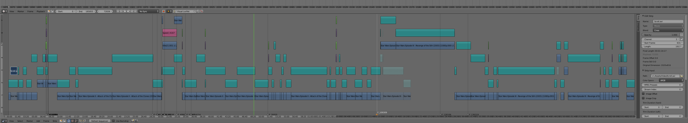
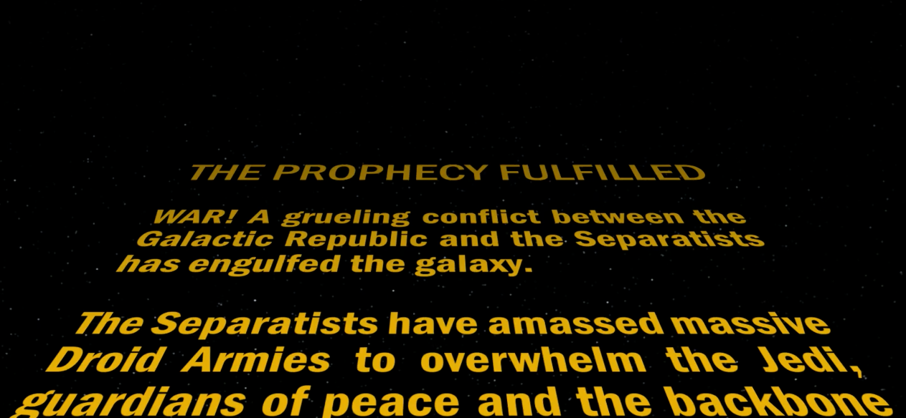
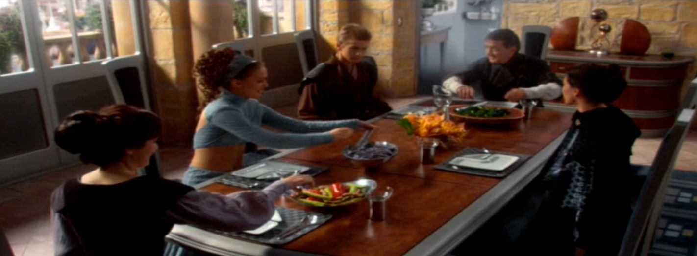
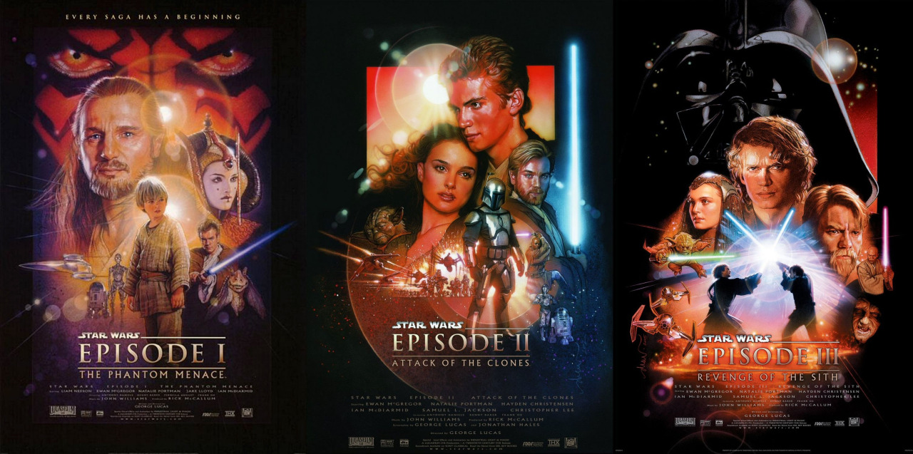

Star Wars Edit
I edited the three Star Wars prequels into one movie using Blender for a total runtime of 2h 3m with credits. Almost every visual cut required audio fade ins and outs since background music isn't consistent. It was a ~3 month process that included 2 early cut showings to friends for feedback
90 cuts
Words in opening crawl: 86
1 deleted scene reincluded
Total time of raw footage: 7h 45m